Wände (Surging Souls) = Sofort-Tod
Ab 7:50 wandern Wände über die Arena – nicht dodgebar, blockbar oder invulnerbar. Lücken sind zufällig: früh reagieren, nichts auswendig lernen. Modell-Limit mindestens „Mittel“, sonst sind Wände unsichtbar!
Guild Wars 2 · Raid · Wing 5 · 10 Spieler
Soulless Horror, River of Souls, Statues of Grenth und Dhuum – zu jedem Boss das Wichtigste, Details zum Nachschlagen und am Ende Klassen, Rollen und Klassentipps.
Normal Mode · das Wichtigste
Wing 5 · Hall of Chains – Boss 1. Keine Invuln-Phasen, aber viel Bewegung: tödliche Wände, schrumpfende Arena und Tormented Dead, die vom Rand geschoben werden.
Ab 7:50 wandern Wände über die Arena – nicht dodgebar, blockbar oder invulnerbar. Lücken sind zufällig: früh reagieren, nichts auswendig lernen. Modell-Limit mindestens „Mittel“, sonst sind Wände unsichtbar!
Zwei Spieler nehmen vor dem Kampf die Runen → Sonder-Taste Issue Challenge (45 s CD). Der Fixierte bekommt alle 12 s Necrosis (+40 % Schaden pro Stack) – etwa jede Minute tauschen. Boss am Rand des inneren Kreises halten, von der Gruppe weg.
Ab 90 % alle 20 s ein Golem in der Mitte, fixiert den inaktiven Tank. Tot hinterlässt er ein großes rotes Feld (Boon-Korruption). Druide schiebt ihn vom Rand (Glyph of the Tides + Point-Blank Shot) Richtung Boss, Ranged-Cleave tötet ihn dort.
Innerer oranger Kreis, danach ein äußerer Ring. Den inneren Kreis seitlich dodgen, damit du nicht im Ring landest. Aegis/Protection helfen.
4er-Kegel (ab 7:30): seitlich ausweichen, sie drehen sich noch einmal. 8er-Kegel (ab 66 %): etwas zurück in eine Lücke – nah am Boss treffen mehrere. Jedem zweiten 8er folgt eine Breakbar – sonst Fear von der Plattform = Wipe.
Bei 90/66/33 % fällt der Rand weg (wer dort steht, stirbt). Sensen verwandeln Boons in Conditions, Hammer-Spin und Finger korrumpieren Boons. Mehrfach-CC-Skills erst nach dem Push zünden, sonst stoppt der Golem nah an der Gruppe.

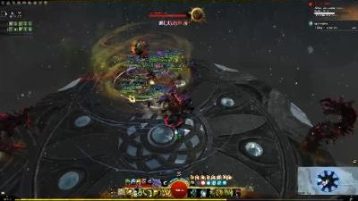
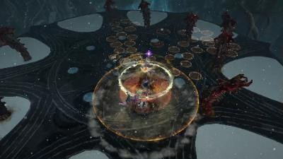
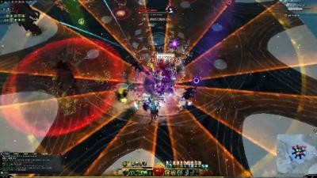
Bilder & Mechaniken: Hardstuck – Soulless Horror · Klassendaten: Wingman – Soulless Horror · Klassentipps weiter unten.
Challenge Mode · nur das Neue
Keine Extra-HP und keine neuen Mechaniken – aber drei Änderungen, die den Kampf deutlich chaotischer machen.
Ein Bruch passiert schon beim Start. Nach dem letzten Bruch bei 33 % bleibt nur noch der innere Kreis – schlechte Golem-Pushes machen die Endphase fast unmöglich.
Beide Tanks nehmen deutlich mehr Schaden, auch beim frühestmöglichen Tausch. Giver/Minstrel-Ausrüstung ist Pflicht, Healer müssen die Tanks im Blick haben.
Die 8 Elite-Wurms vom Anfang kommen zurück und spucken weiter Projektile – etwas mehr Schaden auf alle. Ranged räumt sie bei Wand-Rotationen weiter ab.
Je kleiner die Fläche, desto wichtiger: Golem immer Richtung Boss und über den Rand schieben, keine Golem-Felder im inneren Kreis.

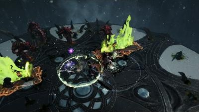
Bilder & Mechaniken: Hardstuck – Soulless Horror (Challenge Mode) · Klassendaten: Wingman – Soulless Horror (Reiter Challenge Mote) · Klassentipps weiter unten.
Normal Mode · das Wichtigste
Wing 5 · Event 2. Desmina über den Fluss eskortieren: eine Vorhut räumt den Weg frei, eine kleine Eskorte hält Desmina am Leben und schnell.
Auf dem Wasser nimmst du ständig viel Schaden (blockbar/dodgebar), runterfallen = Tod. Desminas Kuppel schützt vor dem Fluss. Erster voller Tod = Geisterzustand: 5 lila Orbs einsammeln → zurück.
Enervators schalten Desminas Kuppel ab und frieren sie ein. Die Vorhut (z. B. 3 Heals + 5 DPS, gern Heal-Scourge mit Sand Swell) springt voraus und tötet sie, bevor Desmina ankommt.
Meist 2 Spieler: Heal-Firebrand + Superspeed-Quelle (Scrapper-Gyros, Holo Leap). Desmina wie einen Spieler behandeln: heilen, Aegis, Superspeed.
Laufen zu Desmina und sprengen 20 % ihrer HP. Breakbar brechen oder vorab Aegis auf Desmina – oder Treffer kassieren und schnell nachheilen.
Spectral Rifts ziehen Spieler an – 10 Treffer schalten sie kurz ab. Ab 25 % kommen Spirit Hordes aus den Rissen: einzeln harmlos, in Masse tödlich für die Eskorte.
Ab 33 % Wände wie bei SH (Treffer = Geisterzustand). Time Bombs auf der Eskorte: wenn der Ring den inneren Kreis erreicht, ist sie fest – hinten an Desminas Kuppel ablegen, sie trifft auch Skelette.
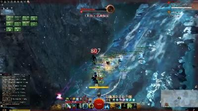
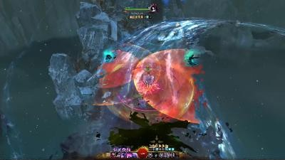
Bilder & Mechaniken: Hardstuck – River of Souls · Klassendaten: Wingman – River of Souls · Klassentipps weiter unten.
Normal Mode · das Wichtigste
Wing 5 · Event 3. Drei unabhängige Mini-Bosse in beliebiger Reihenfolge – üblich zuerst Broken King. Kontrollierter DPS ist wichtiger als maximaler.
Alle 2 % HP neue grüne Eiskreise – fällt einer ohne Spieler, gibt es massiven Schaden für alle. Ziel ~75k Gruppen-DPS (zu viel = Kreis-Flut, < 60k = Enrage). Pro Kreis 1 Frozen-Wind-Stack; beim 4. eingefroren (10 s) → rechtzeitig ablösen lassen.
Stab-Slam erzeugt leuchtende Eisrisse, die pulsieren – seitlich raus. Auto-Angriffe tun spürbar weh. Hinflug: von Death’s Landing links (Lean Techniques oder Fly-Mount).
Spinnen-Geist am Rand töten → 5 Energie-Orbs. Mit der Sonder-Taste auf das leuchtende Rechteck werfen (nicht auf den Boss zielen!). Tank stellt Eater drauf; Kill dort = 10 rote Orbs in der Luft.
Lost Spirit (ab 40 s, dann alle 50 s) mit Green: wer drin steht, fliegt hoch, ein Spieler wird eingesaugt („Opfer“, landet down). Oben 30 s für 5 Orbs, sonst tot. 20 Orbs = alle 6 Fackeln → Eater stirbt endgültig.
2 Werfer auf der erhöhten Plattform werfen Lichtkugeln nach links/rechts. Pro Seite 1 Stunner (oft Druide, Moment of Clarity) + 3 DPS. Auge bei 85/70/55/40/25/10 % gestunnt halten, sonst Teleport (bei 70 % zusätzlich Minotaurus).
Beide Augen müssen innerhalb von 8 s sterben, sonst regenerieren sie. Ist eine Seite schneller, DPS drosseln. Kein Hard-CC wie Knockback/Launch/Pull – überschreibt den langen Stun.
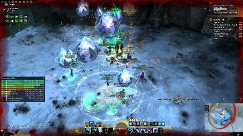
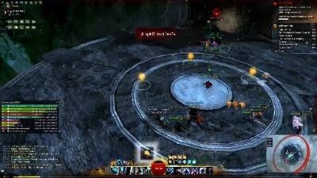
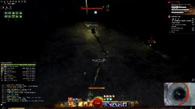
Bilder & Mechaniken: Hardstuck – Statues of Grenth · Klassendaten: Wingman – Statue of Darkness (Eyes) · Klassentipps weiter unten.
Normal Mode · das Wichtigste
Wing 5 · Endboss. 7 verbündete Reaper beschützen. Der Kampf ist gut planbar – Wipes kommen meist davon, dass Routine-Mechaniken nicht aufgefangen werden.
Alle 30 s greift Dhuum nach einem Reaper (großer grüner Kreis). Ein lebender Spieler muss drinstehen, sonst Wipe. Oben in 15 s 5 rote Orbs holen (inkl. großem Enforcer-Orb im Uhrzeigersinn). Danach 2 Greens Pause → feste G1 / G2 / G3 (z. B. DPS, Kiter, Tank).
Ab 9:00: Sonder-Taste + Symbol. Raus aus dem Stack, Bombe explodiert nach 13 s. Im Pre-Event darfst du früh zünden, im Bosskampf auslaufen lassen (sonst verrutscht der Takt). Vor Soulsplits: Bomben kurz vor 6:35/5:15/3:55/2:35/1:15 früh zünden.
Messenger fixieren den ersten Angreifer und sterben nach 15 s. Kiter zieht sie weg von Gruppe und Reapern, blaue Orbs geben Tempo. Wer versehentlich einen hat, kitet ihn selbst.
Nach Riss-Angriff + 3 Autos: eng stacken, warten bis er einen Ort wählt, raus aus dem orangen Kreis. Erwischt = Seele getrennt → in 10 s zu einer Lichtsäule. Grünes Feuer danach tötet – weg von Reapern ködern.
Ab 6:30: er erscheint in der Mitte und schleudert alle aus dem Körper. Zurück zur eigenen Seele (Lichtsäule), sonst tot. Mit dem Rücken zur sicheren Wand, Blick zur Mitte (nie Thron!). Seine Boons strippen, nicht in den orangen Kreis ziehen lassen.
Shackles (ab 60 %): die 2 Nächsten (nicht Tank) sind verkettet – in entgegengesetzte Richtungen laufen („Thron“/„Tür“ ansagen). Slash (ab 30 %): Kegel mit Pull – seitlich. 10 %: alle holen Orbs, dann alle 7 Siegel innerhalb von 10 s kanalisieren.
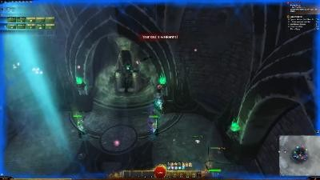
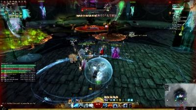
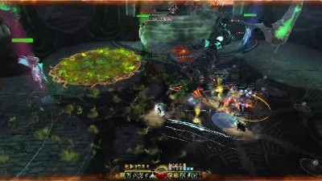
Bilder & Mechaniken: Hardstuck – Dhuum · Klassendaten: Wingman – Dhuum · Klassentipps weiter unten.
| Boss · Modus · Erfolgsquote | Am häufigsten gespielt (Top 4) | Höchster Ø-DPS (Top 4, Specs ≥ 0,8 % Anteil) |
|---|---|---|
| Soulless HorrorNM · 28,51 % | Mechanist 17,86 %, Harbinger 8,11 %, Druid 7,79 %, Scourge 7,63 % | Harbinger 31.567, Willbender 30.215, Renegade 29.955, Berserker 27.270 |
| Soulless HorrorCM · 41,28 % | Mechanist 14,09 %, Harbinger 11,4 %, Scourge 10,5 %, Chronomancer 7,52 % | Antiquary 35.538, Harbinger 34.978, Weaver 34.671, Renegade 33.254 |
| River of SoulsNM · 83,67 % | Scrapper 12,07 %, Troubadour 9,49 %, Mechanist 8,46 %, Chronomancer 7,28 % | |
| Statues (Eyes)NM · 58,18 % | Mechanist 11,9 %, Chronomancer 9,93 %, Reaper 9,33 %, Troubadour 6,34 % | Reaper 19.591, Weaver 19.206, Daredevil 17.774, Dragonhunter 17.534 |
| DhuumNM · 35,78 % | Mechanist 18,53 %, Troubadour 8,93 %, Scourge 6,36 %, Virtuoso 6,08 % | Weaver 22.133, Harbinger 19.967, Willbender 18.822, Daredevil 18.269 |
| DhuumCM · 22,6 % | Mechanist 14,93 %, Troubadour 12,39 %, Scourge 10,57 %, Harbinger 7,76 % | Firebrand 22.329, Weaver 22.224, Antiquary 21.133, Harbinger 20.881 |
| Rolle | Specs | Warum |
|---|---|---|
| Pusher / Stunner | Druide | SH: Golems vom Rand schieben (Hardstuck-Standard); Eyes: Stunner mit Moment of Clarity. Auf SH sehr beliebt. |
| Condi + Ranged-Cleave | Scourge, Harbinger, Virtuoso, Mirage | SH-Golems und Dhuum-Adds; Scourge/Harbinger bringen auch Boonstrip. |
| Supports | Mechanist, Troubadour, Chronomancer, Firebrand | Mechanist auf allen W5-Bossen der meistgespielte Spec; Firebrand als SH-Heal-Tank. |
| Event-Spezialisten | Scrapper (River-Superspeed), Reaper (Eyes-DPS) | Scrapper auf River am häufigsten gespielt; Reaper Top-DPS auf Eyes. |
| Dhuum-Jobs | Kiter = mobiler Support · G1–G3 fest | Kiter mit viel Sustain/Mobilität; erfahrene Gruppen nehmen den Main-Healer. |
Komp-Tipp: SH: 2 Tanks + Druide + 2 Ranged-Cleaver. River: Vorhut ~8, Eskorte 2 (Heal-FB + Superspeed). Statues: Eyes-Werfer/Stunner vorab einteilen. Dhuum: Kiter, G1/G2/G3 und Siegel für 10 % festlegen.
Firebrand · Dragonhunter · Willbender · Luminary
Mechanist · Scrapper · Holosmith · Amalgam
Chronomancer · Virtuoso · Mirage · Troubadour
Tempest · Weaver · Catalyst · Evoker
Scourge · Reaper · Harbinger · Ritualist
Renegade · Vindicator · Herald · Conduit
Berserker · Spellbreaker · Bladesworn · Paragon
Druid · Soulbeast · Untamed · Galeshot
Daredevil · Deadeye · Specter · Antiquary